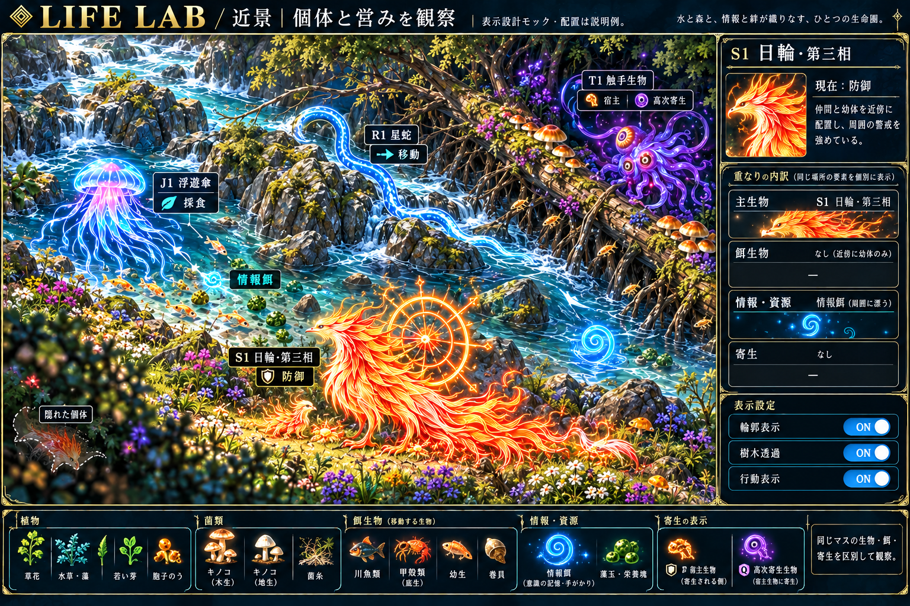
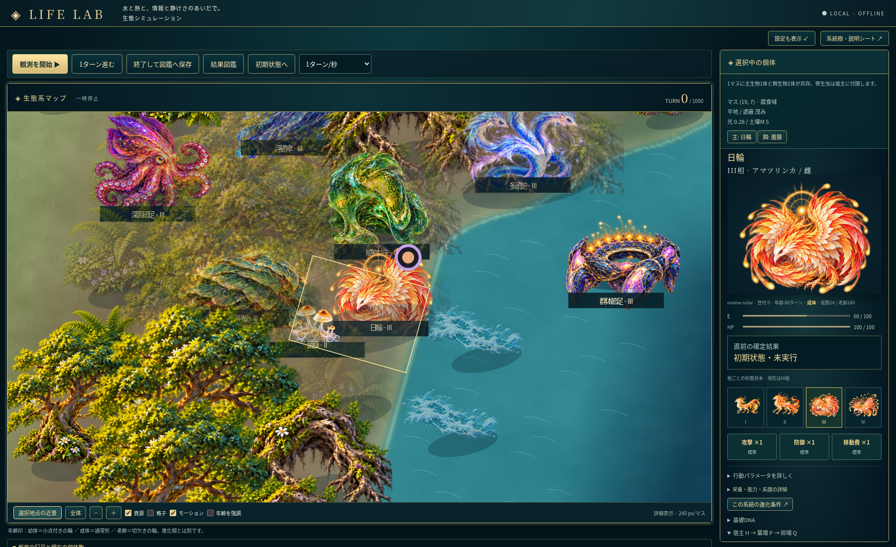
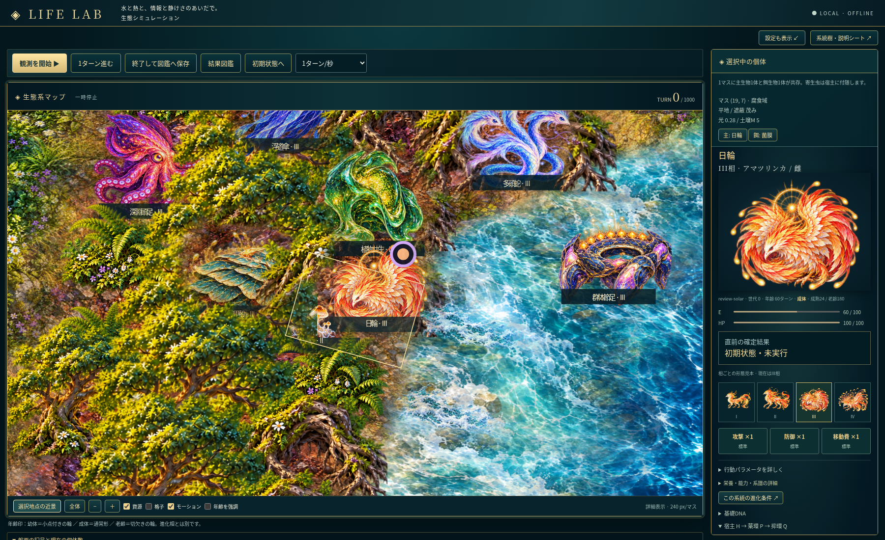

目標：採用モック

密度の高い草花と苔、青い水と白波、立ち上がった岩と根、暖かな光と陰影。
構図を決めた説明用モック。実ゲーム画面ではありません。前回：3.0 実画面

地表と水面は色・ノイズが主体。岸辺の情報が少なく、地物が孤立し、広範囲の透過が生じていました。
7体の第三相・餌・宿主P/Qを明示配置した作画比較用fixture。今回：3.1 実画面

描き込んだ地面と水面を高解像度で合成。砂礫と苔で岸をつなぎ、形に沿った影と局所的な遮蔽解除を適用。
前回と生物状態・位置・倍率を照合。生存実績を表す配置ではありません。